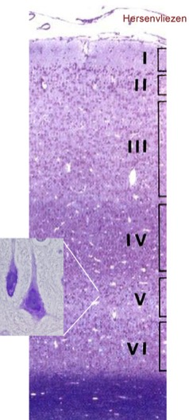
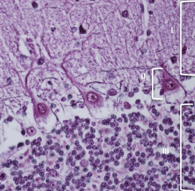

De hersenen:
Ook de grote hersenen (cerebrum) en de kleine hersenen (cerebellum) bestaan uit substantia alba en substantia grisea. Hierbij zal de buitenste laag (= hersenschors of hersencortex) bestaan uit grijze stof en het binnenste deel (medulla) bestaan uit witte stof.
Het cerebrum bestaat uit twee hemisferen. Het oppervlak van elke hemisfeer vertoont een aantal plooien (gyri) en groeven (sulci), die er samen voor zorgen dat het oppervlak sterk vergroot.
De types van neuronen die we in de grijze stof terugvinden, en op welke manier zij synapsen en netwerken vormen is sterk afhankelijk van de regio in hersenen en bijzonder complex. We kunnen echter wel een aantal horizontale lagen terugvinden in de grijze stof van de hersenschors, waar een aantal kenmerkende cellen terug te vinden zijn.
Ook de grote hersenen (cerebrum) en de kleine hersenen (cerebellum) bestaan uit substantia alba en substantia grisea. Hierbij zal de buitenste laag (= hersenschors of hersencortex) bestaan uit grijze stof en het binnenste deel (medulla) bestaan uit witte stof.
Het cerebrum bestaat uit twee hemisferen. Het oppervlak van elke hemisfeer vertoont een aantal plooien (gyri) en groeven (sulci), die er samen voor zorgen dat het oppervlak sterk vergroot.
De types van neuronen die we in de grijze stof terugvinden, en op welke manier zij synapsen en netwerken vormen is sterk afhankelijk van de regio in hersenen en bijzonder complex. We kunnen echter wel een aantal horizontale lagen terugvinden in de grijze stof van de hersenschors, waar een aantal kenmerkende cellen terug te vinden zijn.

I. Moleculaire laag: zeer rijk aan zenuwvezels, voornamelijk dendrieten van piramidale cellen (cellichamen in laag 3 en 5) en afferente zenuwvezels.
II. Buitenste korrellaag of granulaire laag: dicht opeen gepakte kleine stervormige (stellate) neuronen die de rol van interneuron vervullen.
III. Buitenste piramidale laag: bevat kleine en middelgrote piramidale cellen waarvan de dendrieten in de moleculaire laag gelegen zijn en hun axonen naar de naburige cerebrale cortex verlopen.
IV. Binnenste korrellaag of granulaire laag: bevat kleine stervormige cellen; deze laag is sterk ontwikkeld in sensorische gebieden van de cortex (bv. de primaire visuele cortex).
V. Binnenste piramidale laag: bevat middelgrote tot grote piramidale cellen (de cellen van Betz; inset) die hun axonen in de witte stof sturen. Deze laag is sterk ontwikkeld in de motorische gebieden van de cortex.
VI. Fusiforme (of multiforme of multiplexe) laag: bevat verschillende neuronale celtypes, vele spoelvormige (fusiforme) cellen; grenst aan de witte stof.
Het cerebellum bestaat uit een ‘wormvormig middengedeelte’ dat de vermis heet en 2 hemisferen. Opvallend is de erg golvende structuur met grote plooien en dalen, en de typische geribbelde structuur die eigen is aan het cerebellum, deze ribbels bestaan uit uitstulpende folia (= kleinste functionele eenheid) en instulpende sulci. Door al deze plooien en golven krijg je een enorme oppervlaktevergroting van de cerebellaire schors.
Ook het cerebellum bestaat uit een buitenste substantia grisea en een binnenste substantia alba.
Het meest opvallend aan het cerebellum is de grijze stof van de cerebellaire schors, die opgebouwd is uit 3 karakteristieke lagen: de moleculaire laag, de Purkinje-cellaag (=ganglionaire laag) en de korrel(cel)laag (=granulaire laag).

I. Moleculaire laag: bevat dendrietbomen van de purkinjecellen en ‘parallelvezels’ afkomstig van de korrelcellen (in III). De laag bevat ook korfcellen, waarvan de uitlopers rondom de purkinjecellen gelegen zijn. Stercellen liggen in het buitenste deel van de moleculaire laag.
II. Purkinjecellaag (ganglionaire laag): bevat de cellichamen van Purkinjecellen, de opvallendste cellen van het cerebellum.
III. Korrellaag of granulaire laag: de kleine neuronen worden ook korrelcellen genoemd. Hun axonen rijken tot in de moleculaire laag.
II. Purkinjecellaag (ganglionaire laag): bevat de cellichamen van Purkinjecellen, de opvallendste cellen van het cerebellum.
III. Korrellaag of granulaire laag: de kleine neuronen worden ook korrelcellen genoemd. Hun axonen rijken tot in de moleculaire laag.